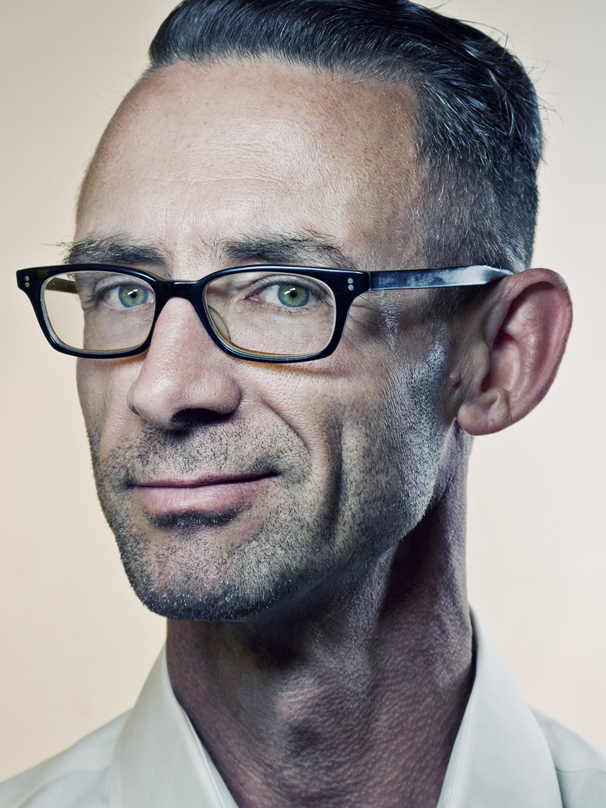
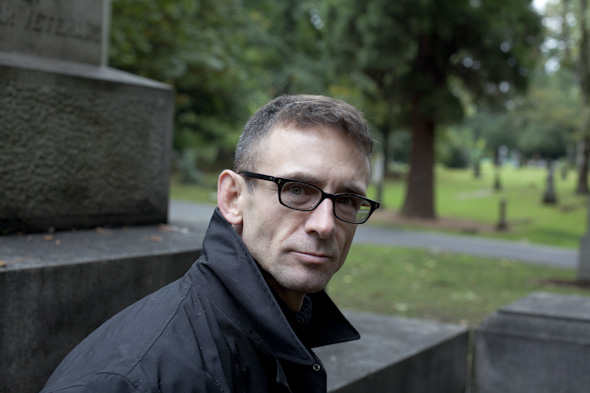

|
 Имя: Чарльз Майкл «Чак» Паланик Дата рождения: 21 февраля 1962 г. Знак Зодиака: Рыбы Место рождения: Песко, Вашингтон, США Деятельность: писатель, журналист Вес: 75 кг Рост: 180 см РАННИЕ ГОДЫ, ДЕТСТВО И СЕМЬЯ ЧАКА ПАЛАНИКА Чарльз родился в городе Песко и прожил все свое детство в небольшом вагончике, в котором жила его семья. По происхождению Чак Паланик является украинцем. По крайней мере, с этой страной была неразрывно связана вся судьба его семейства. Его дедушка с бабушкой эмигрировали из Украины еще в начале двадцатого века. Однако в память об украинском происхождении оставили себе прежнюю фамилию – Палагнюк. Именно так в оригинале произносится фамилия писателя. Завершая данную тему, стоит отметить и тот любопытный факт, что один из родных братьев Чака в настоящее время живет в одном из украинских городов. Сам же Паланик всегда довольно-таки слабо интересовался своей родословной. Более интересной для него всегда представлялась художественная литература и практическая журналистика. В 1986-м году наш сегодняшний герой поступил в Орегонский университет США, где начал учиться на журналиста. В этот период он также подрабатывал стажером на Общественном радио KLCC в городке Юджин. Именно в этот период Чак Паланик начал писать свои первые книги, которые в тот период посвящались преимущественно вопросам … автомеханики. Все дело в том, что некоторое время спустя будущий писатель начал работать также механиком по дизелям, а потому учебные пособия по ремонту грузовиков были для него чем-то вроде неплохого приработка. Что же касается его работы в качестве журналиста, то таковая практически всегда протекала с большими перерывами. Вначале Чак Паланик работал в качестве внештатного сотрудника, однако впоследствии надолго оставил данное занятие и начал заниматься волонтерской работой. В последующие годы наш сегодняшний герой неоднократно возвращался в журналистику, но всегда неизменно оставлял ее с течением времени. Даже в настоящее время Паланик иногда публикует свои статьи в различных американских изданиях, однако подобное творчество снова же является для него лишь чем-то вроде хобби. Желая сделать свою жизнь максимально ценной и наполненной смыслом в начале 1990-х годов Паланик начал работать волонтером в хосписе. Здесь он занимался перевозкой людей, страдающих от неизлечимых заболеваний. В обязанности будущего писателя входило также выполнение некоторых функций по организации работы «групп поддержки». Именно таким образом, зародились начальные главы последующего романа «Бойцовский клуб», который, собственно и принес Паланику известность. В качестве волонтера Чак Паланик проработал несколько лет, однако впоследствии все-таки оставил данное занятие из-за смерти одного из пациентов, который стал для него особенно близок. ЧАК ПАЛАНИК В ЛИТЕРАТУРЕ, ПИСАТЕЛЬ СЕГОДНЯ Свою писательскую карьеру Чак Паланик начал в 35-ть лет. Дебютной его книгой стал роман «Бессонница: Если ты жил здесь, то был уже дома», который, однако, так и не был опубликован. Подобная судьба постигла и вторую книгу писателя – «Невидимки». По мнению редактора, данный роман был очень вызывающим, а потому был забракован. Словно бы в отместку своему редактору, Чак Паланик решил написать еще более вызывающий роман, который, как это ни парадоксально, вскоре был опубликован. Данной книгой стал легендарный «Бойцовский клуб», который впоследствии принес своему создателю несколько престижных литературных премий. Три года спустя на прилавках магазинов США появились другие книги автора – роман «Уцелевший» и ранее не забракованная работа «Невидимки». Стоит отметить, что последняя из названных книг также стала очень популярна среди поклонников творчества писателя. В последующие десять лет (с 2001-го по 2011-й) свет увидели еще одиннадцать книг автора, среди которых выделяются такие культовые произведения как «Удушье», «Призраки» и «Колыбельная». Поводом для написания последней из названных книг стала трагическая смерть отца Чака и его тогдашней жены Донны, погибших от рук бывшего парня супруги Паланика-старшего. В своей книге «Колыбельная» автор рассуждает над тем, имеет ли право тот или иной человек по своему усмотрению забирать чью-то жизнь. Данный роман также стал весьма успешен и был признан лучшей книгой 2003-го года по версии ассоциации «Pacific Northwest Booksellers». Впоследствии Чак Паланик продолжал работать в качестве писателя и издал еще семь книг в период с 2007-го по 2013-й. В настоящее время легендарный автор работает над серией новых произведений, среди которых выделяется анонсированный роман «Бойцовский клуб-2», призванный стать продолжением культового бестселлера. |